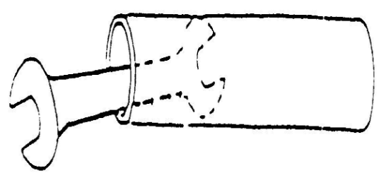
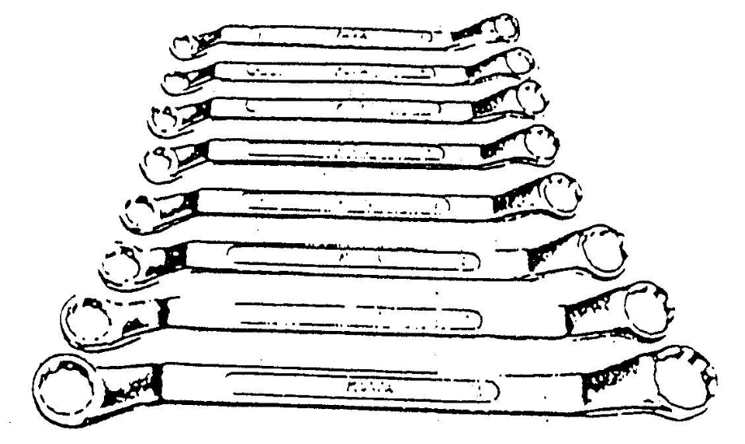

PERHITUNGAN MOTOR BAKAR
- Volume silinder (Vs)
Volume silinder adalah volume dimana piston bergerak dari titik mati atas (TMA) sampai titik mati bawah (TMB). Volume silinder dinyatakan dengan cm³/cc atau liter (l).


Keterangan:
Vs = voume silinder (cm³)
D = diameter silinder (cm)
S = langkah torak/ L (cm)
n = jumlah silinder
Contoh:
-
Sebuah motor dengan diameter silinder 57 mm dan panjang langkah 70 mm. Tentukan besarnya volume silinder tersebut!
Penyelesaian:
Diketahui:
D = 56 mm = 5,6 cm
S = 70 mm = 7,0 cm
Ditanyakan: Vs = ......??
Jawab:
Vs = π/4.D².S
= 3,14/4.5,6².7
= 0,785X31,36X7
= 172,32 cm²
-
Diketahui motor 4 silinder dan diameter silinder 82 mm, sedangkan volume silindernya 1800 cm³. Berapa besar langkah torak?
Penyelesaian:
Diketahui:
n = 4
D = 8,2 cm
Vs = 1800 cm³
Ditanyakan: S =………??
Jawab:
Vs = π/4.D².S.n
= π/4.D².S.n= Vs
S = Vs/
π/4.D².n
S = 1800/0,785.67,24.4
= 1800/211,1336
= 8, 52 cm³
- Perbandingan kompresi

- Momen Mesin ( Torsi )
Momen mesin atau torsi adalah nilai yang menunjukkan gaya putar pada output mesin (poros engkol) yang diperoleh dari tenaga hasil pembakaran didalam silinder. Satuan yang digunakan pada momen adalah Nm. Momen/torsi merupakan hasil kali antara Gaya putar mesin (F) dan jarak (d). Sehingga, torsi dapat dihitung dengan rumus :

= Torsi benda berputar (N.m)
F = adalah gaya sentrifugal dari benda yang berputar (N)
d = adalah jarak benda ke pusat rotasi (m)
- Daya Mesin
Daya mesin dihitung dengan satuan KW (Kilowatts). Selain itu juda dinyatakan dalam HP (Horse Power) atau PS (Pferdestarke/Germany Horse Power). Untuk mengkonversi satuan daya dalam HP dan PS disajikan dalam table berikut.

Jika torsi dinyatakan dalam , putaran mesin dalam n, maka daya (N) dapat dihitung dengan rumus :

Pada motor bakar, daya indikator adalah besarnya energi pembakaran yang dihasilkan setiap satuan waktu. Energi yang dihasilkan merupakan inikator daya mesin. Namun tidak semua daya indikator digunakan untuk menggerakkan mesin. Hanya 25% daya yang digunakan untuk menggerakkan mesin. Daya ini disebut dengan daya efektif. Daya Efektif (Ne) addalah daya yang berasal dari poros mesin yang digunakan untuk menggerakkan beban.

Daya Efektif dapat dirumuskan sebagai berikut.

Keterangan :
Ne = daya efektif (HP)
Ni = daya indikator (HP)
Ng = kerugian daya gesek (HP)
Na = kerugian daya assesoris (HP)
- Efisiensi Mekanik
Efisiensi mekanis (ηM) dipengaruhi oleh komponen-komponen mekanis yang dipasang pada motor tersebut. Selain itu juga tergantung kecepatan mesin. Semakin besar kecepatan, semakin besar pula daya yang digunakan untuk menggerakkan motor. Ini berarti bahwa rugi-rugi mekanis semakin besar bila kecepatan motor semakin tinya gesek mesin. Efisiensi mekanik dapat dihitung sebagai berikut.

- Efisiensi Thermis
Efisiensi termal (ηT) mengindikasikan seberapa besar energi dari bahan bakar dikonversi menjadi tenaga. Walaupun jumlah campuran udara-bahan bakar yang masuk ke dalam silinder lebih besar, yang berarti energi bahan bakar lebih besar, namun tidak semua energi tersebut dikonversi menjadi energi mekanis. Motor bakar yang paling baik hanya mengkonversi 1/3 energi kimianya menjadi energi mekanis. Motor bakar dengan kompresi rendah memikili ηT 0,26. Sedangkan motor bakar dengan perbandingan kompresi tinggi memiliki ηT 0,34.
- Efisiensi Volumetrik
Efisiensi volumetrik (ηV) mengungkapkan seberapa banyak campuran udara-bahan bakar masuk ke dalam silinder. Campuran udara-bahan bakar yang memasuki silinder ketika langkah hisap inilah yang akan menghasilkan daya. Efisiensi volumetric merupakan perbandingan antara volume campuran bahan bakar (Vi) dan udara yang masuk kedalam silinder (VL).